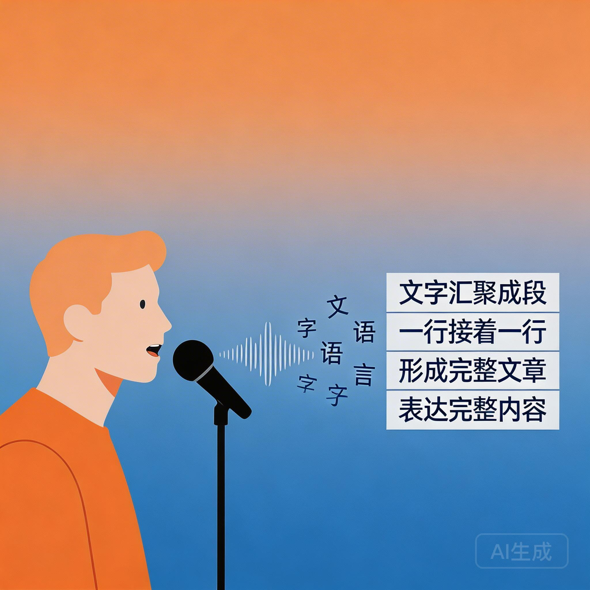
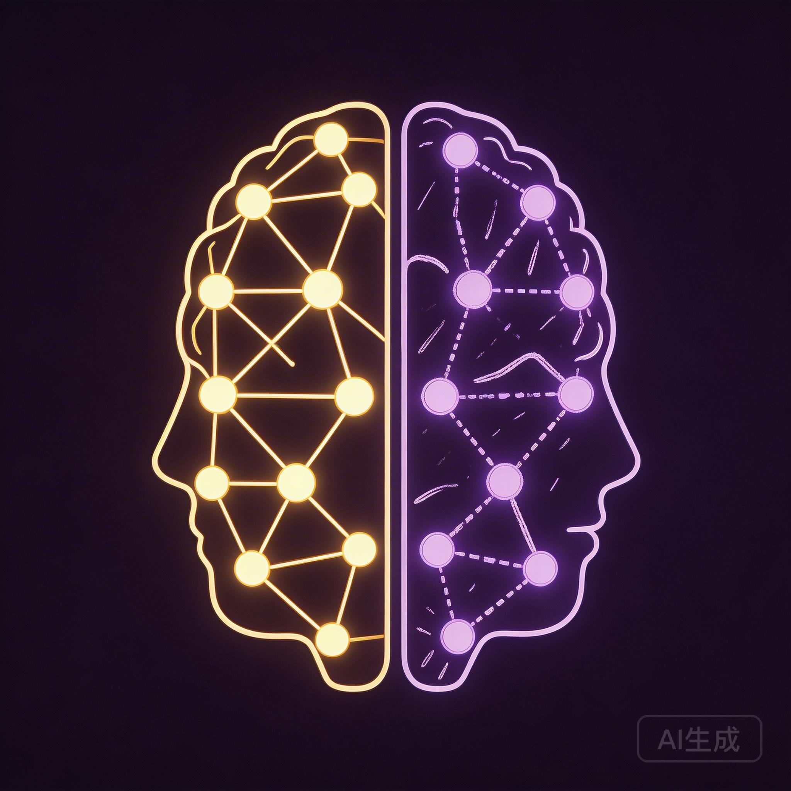
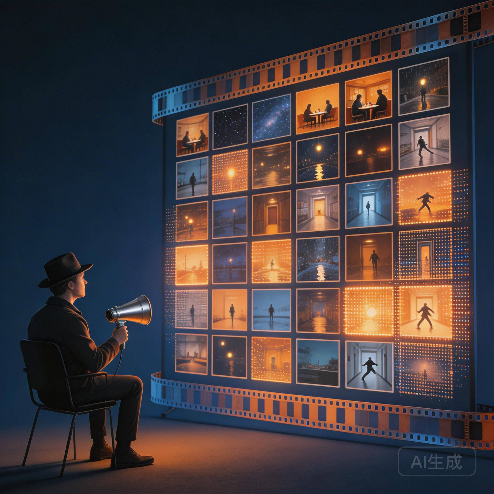
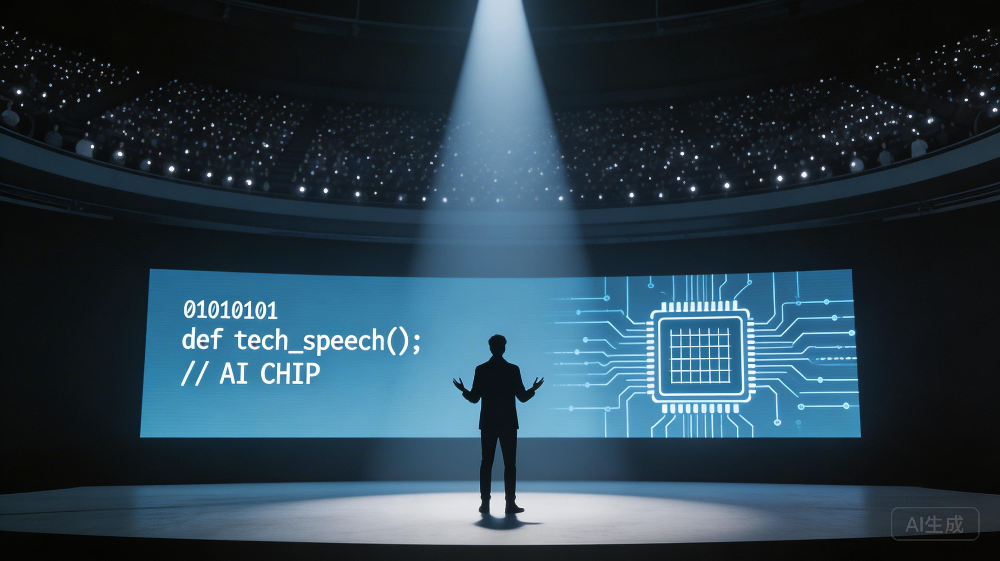
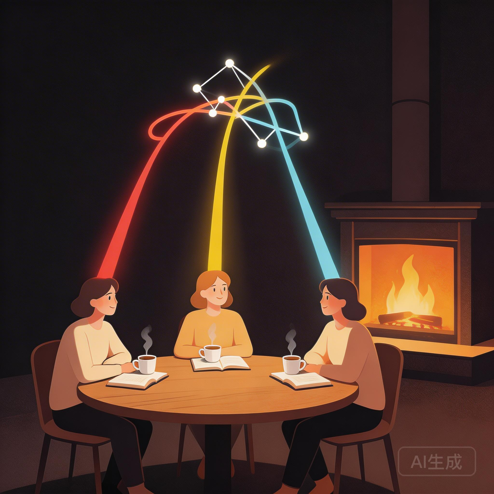

当AI帮你写出完美的文章，你还能在脑中重新生成它吗？
2026 年 4 月 7 日 · 周一夜话
周一夜晚，三个人陆续上线。摇摇还在回家的路上，戴着耳机就先听着——过去三天，他加了25个小时的班，交付了四份报告。「马云要是不给我升职，真是对不起我。」
白豆也在公司。明天要去参加卡兹克的大会，后天还要自己再去一天。李墨玩倒是清闲一些，准备好了投屏。
AI排版工具那篇文章爆了。800多阅读、133个转发——20%的转发率，直接进了微信推荐池。一天涌入20个新关注者。

声音变成文字，文字变成文章上周更新4篇，这周要更新5篇。节奏是：2篇蹭热点思考文 + 2-3篇实操教程。「发出来比完美更重要」，这是他录第一条小红书视频后最大的感悟——磕磕绊绊，但有人从录屏的地址栏里找到网站，充了十块钱去用。
「发出来比完美更重要。在刚开始的时候，管他三七二十一，随便剪两下，先发出来再说。」
李墨玩分享了他的创作流程：先写大纲提纲 → 打开豆包输入法语音转文字 → 一段一段录入 → 复制到 Obsidian 里用 AI 润色 → 手动精修。
「以前用 Get笔记，苹果本地语音识别率特别低，每次都要改很久。现在用豆包输入法效率提升了很多，早上就能把当天的文章全搞完，下午干别的事。」
列出要表达的观点、每段写一句话提纲
打开语音，一段一段口述，自动转成文字
复制到 IDE / Obsidian，让 AI 整理口水词、调整风格
思想和灵感不能交给AI——自己再改一遍

完美的结构 vs 真实的笔迹——哪个能留在脑中？这是本期最核心的讨论。三个人从不同角度碰撞出了同一个结论。
「写作 Skill 只能学到语言结构，我的思想和灵感它学不到。最近火了很多前同事 skill、老板 skill，这些东西并没有继承这些人的技能和灵感，价值值得商榷。」
「我发现 AI 的回复每一条都很丝滑、有结构性，但我很难再次记起它们。当我要跟朋友讲某个东西时，能流畅讲出来的，都是自己花了很长时间写出来的。AI 协助的那些内容，我的状态还停留在写之前的原始状态。」
白豆提出了一个概念：Regenerate——不是 Generate（生成），而是能否在你的脑子里再次生成这个东西。来自 Anki 卡片的启发：如果你不能脱离笔记把一个观点完整讲出来，那它还没有真正属于你。
「AI 输出了很多东西，但和我想让它输出的东西完全不一样。很多人抨击 vibe coding 也是这样——跑出来一堆看似能跑的东西，但你要重新梳理和修改的时间并没有缩短。它给你的一些虚假繁荣，可能会造成不正常的正向引导。」
白豆的商业化在推进。两条线同时走：
一小时一节的深度私教。目前上了两节，对方反馈「特别好」。还为学员做了飞书表单等周边工具，以后做线上课可以直接复用。
已签合同推进中。李墨玩建议先找后端程序员「把脉」架构设计，别急着开干。
「即使没有钱的话，我也想尝试一下，它确实很可以投入到实际应用的一个东西。」
白豆还聊到老板的同学——完全赶上了AI风口，一个月完成全年目标，课程销量和收入都相当可观。

分镜画布上的微缩电影宇宙白豆展示了他用 AI 制作的族谱主题短片——灵感来自一句话：「Your ancestors have lived in you」。你的身体中住过很多你的祖宗，不只是你自己。
工作流是 Heptabase 画布 + 即梦生图 + 图生视频。核心优势：在同一个画布上统一管理角色三视图、场景、分镜、提示词，可以引用多张参考图进行重绘。
白豆还推荐了《纸手机》——深圳大学毕业生两人三天制作，全网两三千万播放。「主要是故事做的好，不是视频做的好。」Heptabase 还开源了这些优秀创作者的完整画布过程。
「对于企业来说，这个成本非常能接受了。而且一下子就能让老板看出工作量——你的整个故事框架，在一个界面上统一操作。」
摇摇把白豆做的滚动叙事 HTML 和 Skill 创建模板，带进了公司。让 Claude Code 读取模板后，结合自己对硬件工程领域的理解，输出了一套「什么工作值得 Skill 化」的判断框架。

从辩论赛到百人讲台——Connecting the dots效果：三层分级——全自动（脚本100%稳定） / AI辅助（大语言模型推算） / 人工判断（需要人介入太多，不值得Skill化）。
更让人惊叹的是——明天，摇摇要飞重庆，给100多人做 AI 分享。
「我大一的时候在人面前话都说不出来。从初赛二三十人，打到半决赛七八十人，打到决赛二三百人。后来去人大附中底下好几千人。你慢慢就习惯了。」
白豆展示了自己做的滚动叙事 HTML 产品——也是现在你正在看的这种形式。它来自大量优秀网站的积累、Anki 的反复激活、和二白（Claude Code）一起打磨出来的。
「它很适合人类去互动、去阅读。它是动态的东西——人有参与感，人是主动的，不是被动的在接收。」
李墨玩也发现 Twitter 上很火的 Claude Code 教程用了类似的形式。「创意很好」「确实挺好的」。
白豆推荐了一本书——《网络人的未来》，2015年出版，100个预言大部分都准了。来自公司老板的同学，也是一位程序员。

深夜圆桌——从AI聊到折叠屏，从重庆聊到五一白豆入了 OPPO N6 折叠屏，1万出头。用上后的感受：「完全是不同介质上的东西——以前换手机只是速度快了一些，这次是信息量完全不一样。」
iPad 直接退役了。微信读书、Anki 复习、Heptabase 白板……折叠屏上全能干。被 Don't Be Silent 和江卓尔种草，线下体验后果断入手。「哪怕花三四千买个最便宜的折叠屏体验一下，你就知道这是完全不同的感受。」
最后聊到了五一——摇摇5月要在重庆待一个月做共创项目，「你们去重庆吗？我们可以相约重庆。」李墨玩说「等你老板走了我们就来」，全场笑声。
AI帮你生成的不算你的。能脱离笔记、在别人面前流畅讲出来的，才是真正内化了的知识。写作的价值不在于输出，在于「再次生成」的能力。
李墨玩录视频磕磕绊绊，但有人从地址栏找到网站充了钱。先跑起来，哪里有 bug 哪里再改。你说的越流畅，后期剪辑工作量越小——但第一步是「先发出来」。
摇摇的洞察：律师课和小程序并不相悖。从定制化里做信息脱密，就变成了标品——这是一套可复用的思路和流程。
《纸手机》全网三千万播放，不是因为AI视频做得好，而是因为故事好。AI降低了制作门槛，但创意和叙事仍然是人的护城河。
摇摇从大一说不出话，到辩论赛二三十人 → 七八十人 → 二三百人 → 人大附中几千人。Connecting the dots——录视频、写文章、做分享，都是在练同一块肌肉。